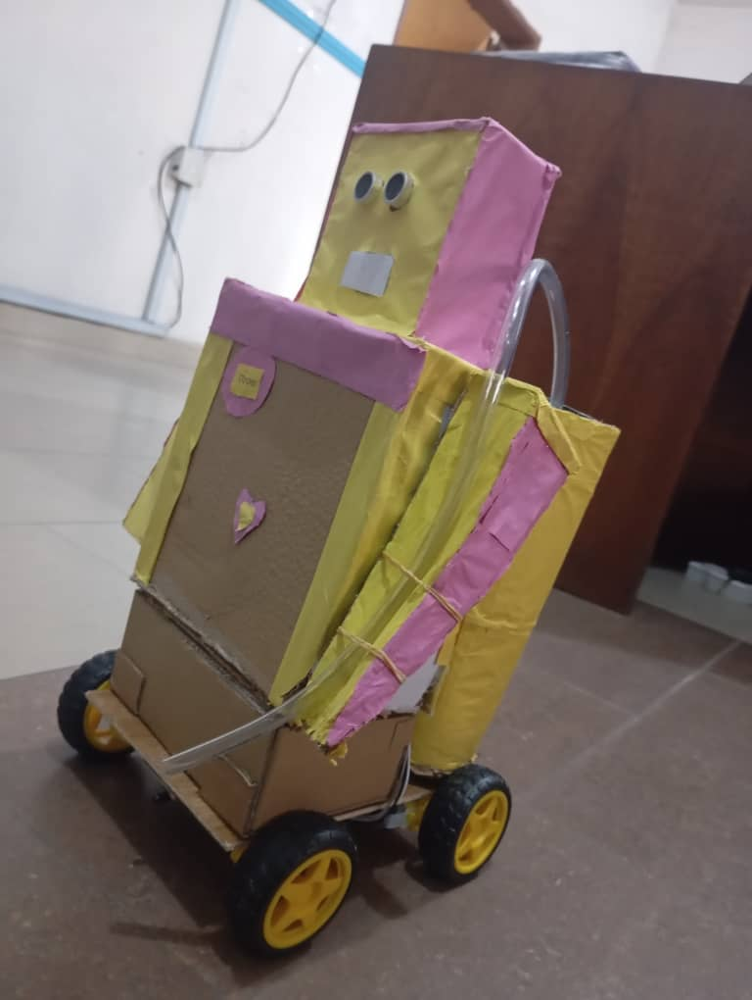
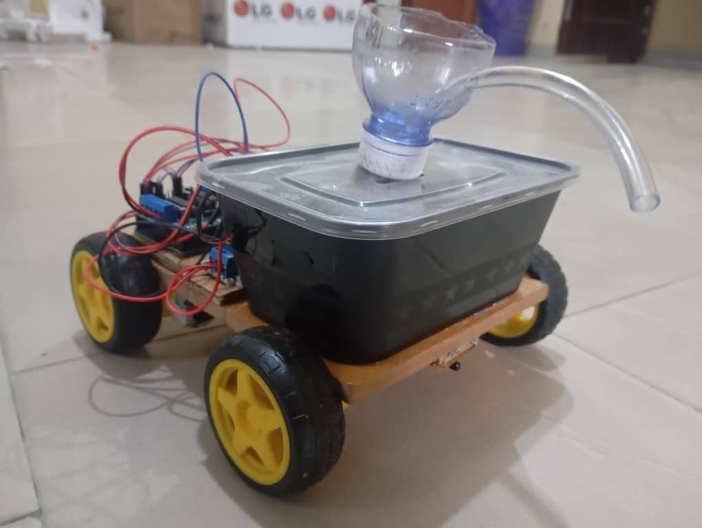
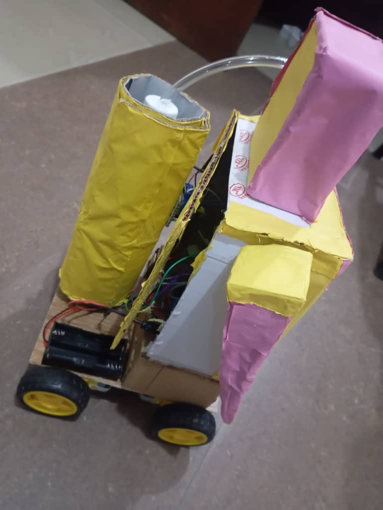

Autonomous firefighting robot with water suppression, flame sensing, and four-wheel mobility inspired by the 2025 Canadian wildfire crisis.
Project Overview
This project presents an autonomous firefighter humanoid robot designed to support emergency response
teams in hazardous environments. Built with four wheels acting as its legs, a mounted water tank, and
an automated pump–hose system, the robot detects fire and immediately deploys water without human intervention.
Equipped with navigation and flame-detection sensors, the robot is engineered to operate independently inside
dangerous zones—helping reduce risks faced by human firefighters while ensuring rapid response during early
fire outbreaks. The concept was inspired by the devastating 2025 Canadian wildfires, which produced
hazardous smoke that traveled as far as Chicago and triggered global air-quality alerts.
Image Gallery
Photos and design concepts of the Firefighter Humanoid Robot:



Key Features
- Autonomous navigation using IR sensors and obstacle detection
- Four-wheel locomotion acting as robotic legs for stable movement
- Automatic water spray system triggered by flame detection
- Onboard water tank + high-pressure mini-pump
- Fire detection using flame sensors and heat signatures
- Designed for hazardous indoor and outdoor environments
Technical Components
- Microcontroller (Arduino)
- Flame sensors
- IR/ultrasonic navigation sensors
- DC motors and motor driver
- Water pump and storage tank
- Flexible hose for directional water release
- Rechargeable battery system
How It Works
- Sensors constantly scan the environment for fire or obstacles.
- When flames are detected, the robot halts and activates its water pump.
- The hose releases water directly toward the flame source.
- Navigation logic ensures the robot maintains a safe distance.
- The robot continues scanning until the fire is fully suppressed.
Motivation
The robot was conceptually motivated by the 2025 Canadian wildfires, which caused extreme air-quality deterioration
across North America. The event underscored the importance of autonomous, resilient firefighting robots capable of operating
in dangerous, smoke-filled environments where human entry is unsafe.
Applications
- Indoor fire emergency response
- Remote or hazardous environments
- Warehouses and industrial plants
- Search and rescue support
- Early fire suppression in homes or offices
Future Improvements
- Thermal imaging for advanced fire localization
- Autonomous mapping (SLAM)
- Remote control via mobile app
- Enhanced water-targeting with servo-controlled nozzles
- Integration of AI-based fire prediction models
Technologies Used
Arduino
Robotics
Fire Detection
Embedded Systems
Sensors
Automation